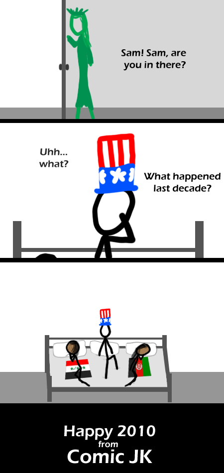

Comic JK 325
When I Feel Like It
⇤
<
?
>
⇥

⇤
<
?
>
⇥
Forum
.
RSS
.
Digg
.
Facebook
.
Reddit
.
Twitter
.
Stumbleupon
Enter your thoughts on number 325 here. Please, no spamming, trolling, phreaking, invading other countries, or rainbowdash idiocy. Holy FUCK this is racist! Wow! Burn! OMG XD ACTUAL FIRST POST AND I GOT IT AT EXACTLY 12:00 XDDDD Also. What flags are those? >> I might be wrong but I think its Iran and Iraq respectivly. >>> Nope Iraq and Afghanistan... now he literally fucked them... JK, I only hope that this is true. I desperately want Lady Liberty to wake uncle Sam out of his whore-filled sex with other countries and to get back to the women he has sworn to protect - Life, Liberty and the Pursuit of Happiness. </soapbox> >whose life, liberty and pursuit of happiness? Mohammed: that's funny, right? > Only if it involves a caricature depicting sodomy. Well, there went the first decade of the future. OMG LOVE the title-text! NO! IT IS NOT A NEW F**KING DECADE!!!! THINK ABOUT IT! The calendar went from 1 BC to AD 1. The first decade was therefore from AD 1 to AD 10, and the next one started in AD 11 and lasted til AD 20. Follow it along two millennia, and the two hundred and first decade lasted from 2001 to 2010! THERE IS ONE MORE YEAR LEFT! >Therefore 1990 was part of the 80's, 1980 was part of the 70's...get a grip, it's a new decade >>Technically, it's true, so the new millennium (and the decade) started with 2001. But... nobody likes a math geek, Scully. >>>I find it ironic he tells us to get a grip. >>>>Friend, sometimes you have to realize the public masses are wrong, realize their incorrectness is inconsequential, and ignore their ignorance. >>>>> 0...10 ? >>>>>> It's like "The New Millenium starts 2000 or 2001?" all over again. Do what I did back then, celebrate it twice. >>>>>>>That's only true for you backward people with your base 10 Gregorian Calendar... Mine's in binary! What are these 'decades' you speak of? >>>>>>>>2 years Technically, any grouping of 10 years is a decade so [1945,1955) is a decade >But [2010,2019] will be an awesomer decade >>Thank you!! So true! Dictionary.com. Look it up. Then stop this nonsense. >Nobody trusts dictionary.com >>askoxford.com/results/?view=dict&freesearch=Decade&branch=13842570 >>>>>>>>>Oh God, I just realised, people will think 2100 is a leap year. In fact, X-hundred years are actually only leap years if X is wholly divisible by 4. 20/4=5, so 2000 was a leap year. 21/4=5.25, not a leap year. But with my current faith in humanity, much due to facebook and youtube, I don't think anyone will know by 2100. It's still funny though.